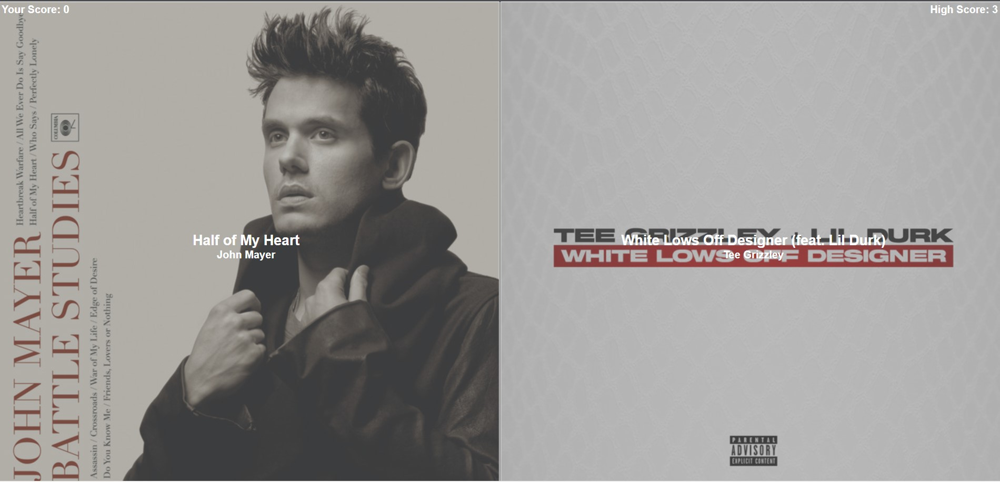
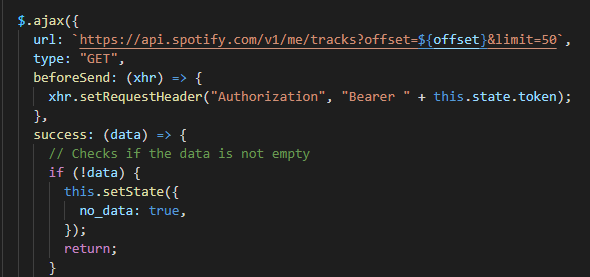

Archive | React
Spotify Song Contest Using React
I built this to get better with React while making something fun. Using Spotify's API, the user guesses which of two songs is more popular.


This was one of the projects that pushed my frontend skills forward because it let me work with state, interactivity, and API data in a project that still felt playful.
It ended up being a really good learning project because the idea was simple but the UI still needed to feel responsive and fun.